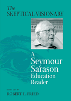

<body bgcolor="#FFFFFF" text="#000000" link="#0000FF" vlink="#CC0000" alink="#CC0000"><center><hr width="350" size="1" align="center" noshade>The first collection of writings by education's most important and critical voice<hr width="350" size="1" align="center" noshade><p><a href="https://cdcshoppingcart.uchicago.edu/Cart/ChicagoBook.aspx?ISBN=9781566399791&&PRESS=temple" target="_top">Buy this book!</a> | <a href="https://cdcshoppingcart.uchicago.edu/Cart/Cart.aspx?PRESS=temple" target="_top">View Cart</a> | <a href="https://cdcshoppingcart.uchicago.edu/Cart/Cart.aspx?PRESS=temple" target="_top">Check Out</a></p><p></p></center><!--none//--><h1>The Skeptical Visionary</h1>
<H2>A Seymour Sarason Education Reader</H2>
<h3>edited by Robert L. Fried, Seymour Sarason</h3>
<P>cloth 1-56639-979-3 $90.50, Nov 02, <FONT COLOR=#990033>Available</FONT>
<br>paper 1-56639-980-7 $33.95, Dec 02, <FONT COLOR=#990033>Available</FONT>
<BR> 312 pp
7x10
</P><BLOCKQUOTE><I>"What does it take for the constituents of education&#151teachers, students, parents, administrators, and, above all, the culture of the school&#151to work together synergistically? To find out, read this distillation of Seymour Sarason's fifty years of reflections&#151always challenging, often wise."</I>
<br>&#151<b>Howard Gardner</b>, author of <I>Good Work: When Excellence and Ethics Meet</I><I></I></BLOCKQUOTE>
<p>Seymour Sarason, in the words of Carl Glickman, is "one of America's seminal thinkers about public education." For over four decades his has been a voice of much-needed skepticism about our plans for school reform, teacher training, and educational psychology. Now, for the first time, Sarason's essential writings on these and other issues are collected together, offering student and researcher alike with the range, depth, and originality of Sarason's contributions to American thinking on schooling.
<p>As we go from debate to debate on issues such as school choice, charter schools, inclusive education, national standards, and other problems that seem to drag on without solution, Sarason's critical stance on the folly of many of our attempts to fix schools has always had at the center a concern for the main players in our educational institutions: the students, the teachers and the parents. Any plans that cannot account for their well-being are doomed to failure. And in the face of such failure, the clarity of Sarason's vision for real educational success is a much-needed antidote to much of the rhetoric that currently passes for substantial debate.
<p>A wide-ranging and comprehensive selection of Sarason's most significant writings, <I>The Skeptical Visionary</I> should find a prized space on any student's or teacher's bookshelf.
<BR>&nbsp;<h2>Excerpt</h2><P>Excerpt available at <a href="http://www.temple.edu/tempress">www.temple.edu/tempress</a></p>
<BR>&nbsp;<h2>Reviews</h2>
<p><I>"Every time I'm getting too cocky, and think I've got 'the answer,' I read and reread Sarason. He pricks my conscience, but in such a delightful way that I go back for more. He goads me into thinking deeper, and being a bit more honest with myself. I find myself always wanting to argue back, wiggle out a bit, build a roadblock to his devastating logic. Of course, that's what Sarason's after&#151and it works. This collection puts together most of my favorites and it invites a new generation of readers to become skeptical idealists, in the best and most necessary sense of that phrase."</I>
<br>&#151<b>Deborah Meier</b>, author of <I>The Power of Their Ideas: Lessons for America from a Small School in Harlem</I>
<p><I>"</I>The Skeptical Visionary<I> is an indispensable guide to understanding one of the most thoughtful education thinkers of the 20th century&#151a must-read for practitioners and policymakers alike. Fried's introductory essay provides a concise and illuminating framework for viewing the work of Sarason. This work is an invaluable contribution to the literature of school reform."</I>
<br>&#151<b>Tony Wagner</b>, Co-Director, Change Leadership Group, Harvard University, Graduate School of Education, and author of <I>Making the Grade: Reinventing America's Schools</I>
<i><p>"Fried has judiciously selected 24 essays written over a 40-year period.... The approach provides both a coherence and a context for Sarason's wide-ranging intellect and results in a rich and deep appreciation of one of the most influential minds in modern psychology."</i>
<br>&#151<b><i>Contemporary Psychology</i></b>
<BR>&nbsp;<h2>Contents</h2><P>
<p>Editor's Note and Acknowledgments
<br>Editor's Introduction: Seymour Sarason: Sculptor of Ideas
<p><b>Part I: The Teacher</b>
<br>1. Powerlessness Unanticipated
<br>2. You Know More Than You Think and More Than They Give You Credit For
<br>3. Why Teachers Must Also Be Psychologists
<br>4. Teaching as a Lonely Profession
<br>5. Power Relationships in the Classroom
<br>6. Constitutional Issues in the Classroom
<br>7. The "Nonreading" Professional
<p><b>Part II: The School</b>
<br>8. The School Culture and Processes of Change
<br>9. Underestimating Complexity
<br>10. Programmatic and Behavioral Regularities
<br>11. Confronting Intractability
<br>12. Conceptualizing the Educational System
<br>13. Predictable Features and Problems in the Creation of Charter Schools and Other New Organizational Settings
<p><b>Part III: Students and Parents</b>
<br>14. Themes from Childhood and Adolescence
<br>15. Columbine High School and Contexts of Productive Learning
<br>16. An Overarching Goal for Students
<br>17. Students as Teachers
<br>18. Parental Involvement and Power Struggles: Applying the Political Principle to Relationships Within the School and Beyond
<br>19. The Governors: Teachers and Parents
<p><b>Part IV: The Political and Policy Agenda</b>
<br>20. The Non-Learning, Non-Self-Correcting System
<br>21. Are Schools Unique Organizations?
<br>22. Our Expectations of Political Leaders
<br>23. America's Only Serious Education President
<br>24. What Should We Do?
<p><b>Part V: Tables of Contents from Sarason's Books on Education</b>
<br><i>Educational Reform: A Self-Scrutinizing Memoir
<br>Questions You Should Ask About Charter Schools and Vouchers
<br>American Psychology and Schools
<br>Teaching as a Performing Art
<br>Charter Schools: Another Flawed Educational Reform?
<br>Crossing Boundaries: Collaboration, Coordination, and the Redefinition of Resources
<br>Political Leadership and Educational Failure
<br>How Schools Might Be Governed and Why
<br>Barometers of Change: Individual, Educational, and Social Transformation
<br>Revisiting "The Culture of the School and the Problem of Change"
<br>Parental Involvement and the Political Principle
<br>School Change: The Personal Development of a Point of View
<br>Psychoanalysis, General Custer and the Verdicts of History and Other Essays on Psychology in the Social Scene
<br>Letters to a Serious Education President
<br>You Are Thinking of Teaching? Opportunities, Problems, Realities
<br>The Care for Change: Rethinking the Preparation of Educators
<br>The Predictable Failure of Educational Reform
<br>The Challenge of Art to Psychology
<br>The Making of an American Psychologist: An Autobiography
<br>Schooling in America: Scapegoat and Salvation
<br>Educational Handicap, Public Policy, and Social History: A Broadened Perspective on Mental Retardation
<br>Work, Aging, and Social Change: Professionals and the One Life-One Career Imperative
<br>The Creation of Settings and the Future Societies
<br>The Culture o f the School and the Problem of Change
<br>The Psycho-Educational Clinic: Papers and Research Studies
<br>The Preparation of Teachers: A n Unstudied Problem in Education
<br>Anxiety in Elementary School Children: A Report of Research</i>
</P><BR>&nbsp;<H2>About the Author(s)</H2>
<table><tr><td valign="top"><img src="/tempress/authors/1580_au1.gif" height="90" width="75"></td><td width="100%" valign="middle"><p><b>Robert Fried</b> is Associate Professor in the School of Education at Northeastern University, and is the author of <I>The Passionate Teacher: A Practical Guide</I> and <I>The Passionate Learner: How Teachers and Parents Can Help Children Reclaim the Joy of Discovery</I>.</P></td></tr></table><table><tr><td valign="top"><img src="/tempress/authors/1580_au2.gif" height="90" width="75"></td><td width="100%" valign="middle"><p><b>Seymour Sarason</b> is Professor Emeritus in the Department of Psychology at Yale University. He is the author of over forty books and is considered to be one of the most significant researchers in education and educational psychology in the country.</P></td></tr></table>
<BR><H2>Subject Categories</H2>
<p><A HREF="/tempress/education.html" TARGET="_top">Education</a>
<BR><A HREF="/tempress/psycho.html" TARGET="_top">Psychology</a>
<BR><A HREF="/tempress/sociology.html" TARGET="_top">Sociology</a>
</p>
<p align="center"><a href="https://cdcshoppingcart.uchicago.edu/Cart/ChicagoBook.aspx?ISBN=9781566399791&&PRESS=temple" target="_top">Buy this book!</a> | <a href="https://cdcshoppingcart.uchicago.edu/Cart/Cart.aspx?PRESS=temple" target="_top">View Cart</a> | <a href="https://cdcshoppingcart.uchicago.edu/Cart/Cart.aspx?PRESS=temple" target="_top">Check Out</a></p><p><font face="Arial" size="1"><a href="copyright.html" onMouseOver="window.status='Web Copyright Policy';return true;" onMouseOut="window.status=''" title="Web Copyright Policy">&copy;</a> 2015 <a href="http://www.temple.edu" target="new" onMouseOver="window.status='Link to Temple University home page';return true;" onMouseOut="window.status=''" title="Link to Temple University home page">Temple University</a>. All Rights Reserved. http://www.temple.edu/tempress/titles/1580_reg.html</font></p>